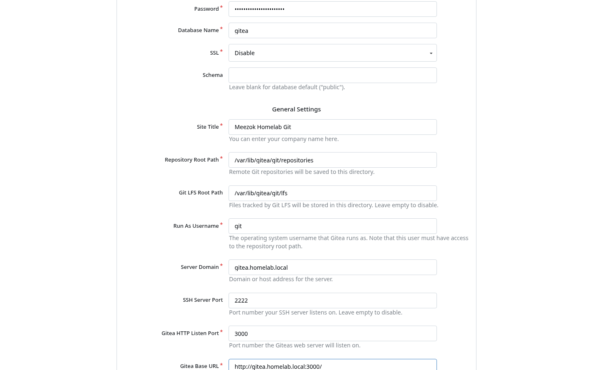
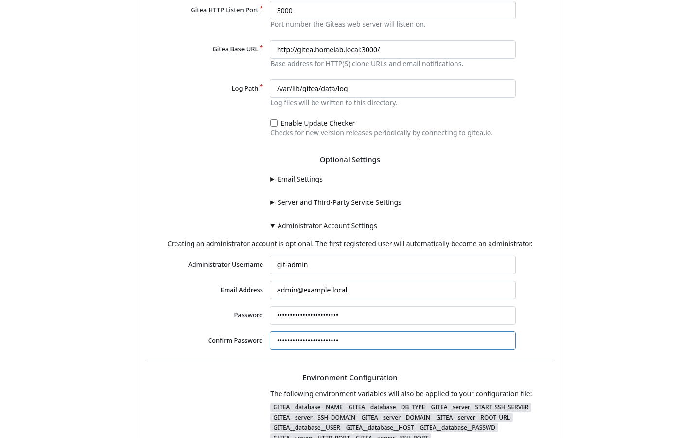
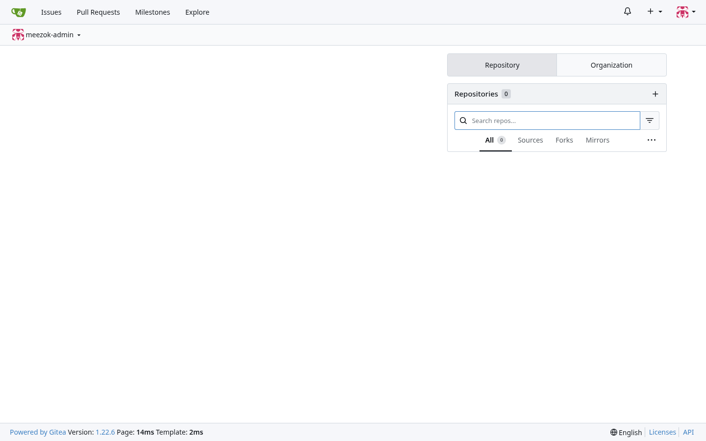
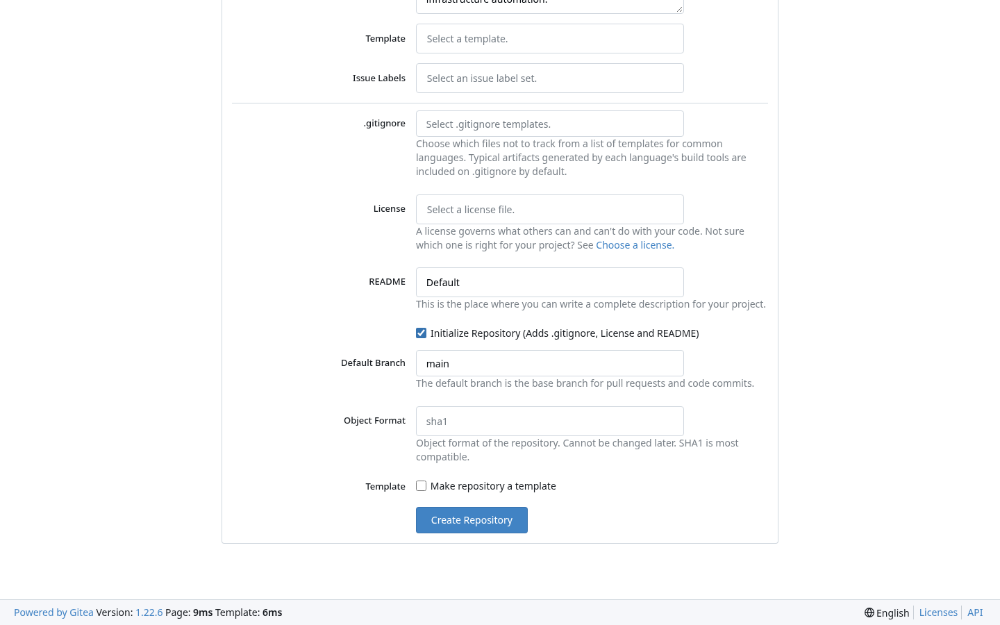
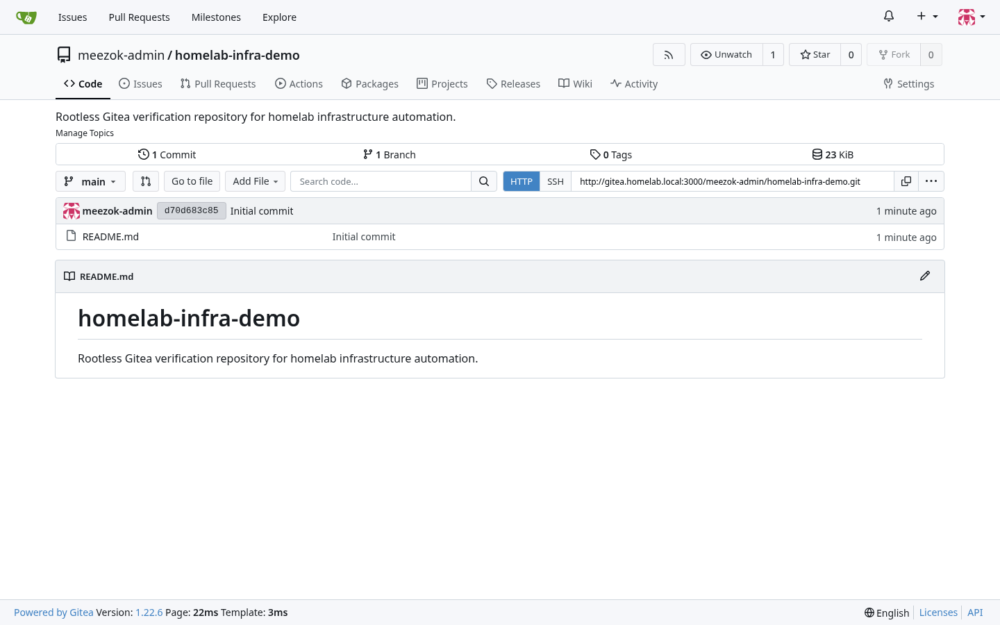
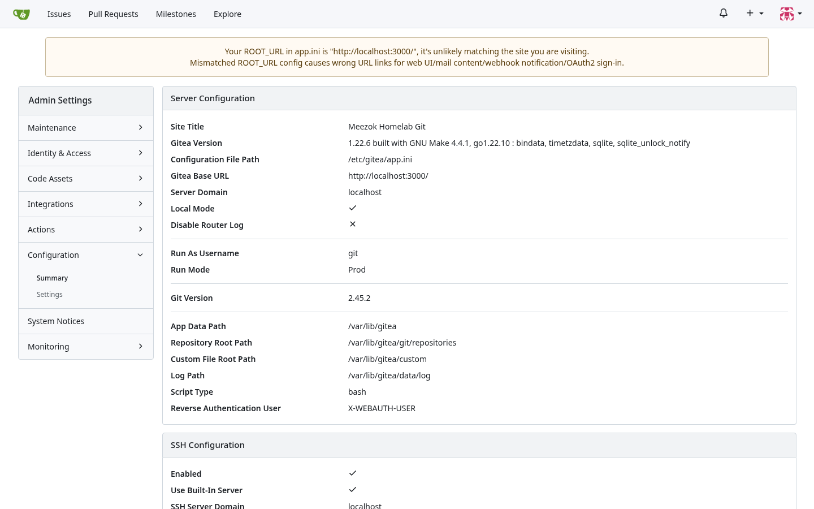

Deploying Self-Hosted Gitea with Rootless Docker & PostgreSQL 16
Self-hosting a Git platform in a homelab or internal engineering environment gives you complete control over source code, CI/CD runners, and private documentation. By deploying Gitea's official Rootless Docker image alongside PostgreSQL 16, we eliminate container UID 0 execution, isolate Git-over-SSH traffic inside Gitea's built-in Go SSH server, and enforce strict host filesystem permissions.
1. Why Rootless Gitea? Standard vs. Rootless Architecture
In the standard gitea/gitea:latest image, the container entrypoint starts as root (UID 0) to manage an internal OpenSSH daemon and adjust volume permissions via s6-overlay. If a vulnerability is triggered via a malicious repository hook, Git LFS payload, or SSRF vector, an attacker landing inside a UID 0 container is one kernel primitive away from host compromise.
The official Rootless image (docker.gitea.com/gitea:1.22.6-rootless) hardens this boundary across three layers:
| Security Dimension | Standard Image (gitea:latest) |
Rootless Image (gitea:latest-rootless) |
|---|---|---|
| Container Entrypoint User | Starts as root (0:0) via s6-overlay |
Runs exclusively as git (1000:1000) |
| SSH Server Implementation | System OpenSSH daemon (sshd) |
Built-in Go SSH server on port 2222 |
| Host Bind Mount Ownership | Auto-chowned by root entrypoint | Pre-created on host as 1000:1000 (0750) |
flowchart LR
subgraph Host["Ubuntu 24.04 LTS Host (UID/GID 1000:1000)"]
subgraph Net["Isolated Bridge Network: gitea-net"]
Gitea["gitea:1.22.6-rootless<br/>User: 1000:1000 (git)<br/>Web UI: 3000/tcp | SSH: 2222/tcp"]
Postgres["postgres:16-alpine<br/>Internal DB: 5432/tcp"]
end
DataVol["./data -> /var/lib/gitea<br/>(chown 1000:1000, chmod 750)"]
ConfigVol["./config -> /etc/gitea<br/>(chown 1000:1000, chmod 750)"]
PgVol["./postgres -> /var/lib/postgresql/data"]
end
DataVol --> Gitea
ConfigVol --> Gitea
PgVol --> Postgres
Gitea --> Postgres
2. Host Directory Preparation & Permission Enforcement
Because a rootless container running as 1000:1000 cannot change ownership of root-owned directories on startup, we must explicitly create the data/ and config/ directories and assign ownership to 1000:1000 before launching Docker Compose:
# 1. Create the stack directory structure
mkdir -p ~/gitea/{data,config,postgres}
# 2. Enforce 1000:1000 ownership and restrictive permissions
sudo chown -R 1000:1000 ~/gitea/data ~/gitea/config
chmod 750 ~/gitea/data ~/gitea/config
Next, store the database credentials in a mode-0600 .env file so secrets never sit in plain text inside docker-compose.yml:
cat > ~/gitea/.env << 'EOF'
GITEA_DB_PASSWORD=<STRONG_DB_PASSWORD>
EOF
chmod 600 ~/gitea/.env3. Production Docker Compose Stack
Create ~/gitea/docker-compose.yml following the official Gitea Rootless Docker specification, pairing gitea:1.22.6-rootless with postgres:16-alpine over an internal bridge network:
services:
server:
image: docker.gitea.com/gitea:1.22.6-rootless
container_name: gitea
restart: unless-stopped
user: "1000:1000"
environment:
- GITEA__database__DB_TYPE=postgres
- GITEA__database__HOST=db:5432
- GITEA__database__NAME=gitea
- GITEA__database__USER=gitea
- GITEA__database__PASSWD=${GITEA_DB_PASSWORD}
- GITEA__server__DOMAIN=gitea.homelab.local
- GITEA__server__SSH_DOMAIN=gitea.homelab.local
- GITEA__server__ROOT_URL=http://gitea.homelab.local:3000/
- GITEA__server__HTTP_PORT=3000
- GITEA__server__SSH_PORT=2222
- GITEA__server__START_SSH_SERVER=true
volumes:
- ./data:/var/lib/gitea
- ./config:/etc/gitea
- /etc/timezone:/etc/timezone:ro
- /etc/localtime:/etc/localtime:ro
ports:
- "3000:3000"
- "2222:2222"
depends_on:
db:
condition: service_healthy
networks:
- gitea-net
db:
image: postgres:16-alpine
container_name: gitea-db
restart: unless-stopped
environment:
- POSTGRES_USER=gitea
- POSTGRES_PASSWORD=${GITEA_DB_PASSWORD}
- POSTGRES_DB=gitea
volumes:
- ./postgres:/var/lib/postgresql/data
healthcheck:
test: ["CMD-SHELL", "pg_isready -U gitea -d gitea"]
interval: 10s
timeout: 5s
retries: 5
networks:
- gitea-net
networks:
gitea-net:
external: falseStart the stack and verify that the container runs under uid=1000(git):
cd ~/gitea
docker compose up -d
docker exec gitea id
# Output: uid=1000(git) gid=1000(git) groups=1000(git)4. Web Installer Walkthrough & Administrator Setup
Step 1: Verify Rootless Paths & Server Settings
Open http://gitea.homelab.local:3000/ in your browser. The installer automatically populates the PostgreSQL connection settings, repository root path (/var/lib/gitea/git/repositories), run user (git), and internal SSH port (2222):

Step 2: Provision the Dedicated Administrator Account
Expand Optional Settings → Administrator Account Settings and define an explicit administrator account before clicking Install Gitea:

Once installation completes, Gitea writes /etc/gitea/app.ini inside the config/ volume and loads the main workspace dashboard:

5. Repository Verification & Site Administration Audit
To validate end-to-end Git storage and internal SSH/HTTP routing, create an initial repository (homelab-infra-demo) initialized with a default README.md on branch main:


Finally, navigate to Site Administration → Configuration → Summary (/admin/config) to confirm that the server is running as git in Prod mode with the built-in SSH server active:

6. Post-Install Hardening & Automated Health Checks
Gitea exposes a built-in health endpoint at /api/healthz that verifies both cache and PostgreSQL database connectivity:
curl -s http://localhost:3000/api/healthz | jq .
{
"status": "pass",
"description": "Meezok Homelab Git",
"checks": {
"cache:ping": [{ "status": "pass" }],
"database:ping": [{ "status": "pass" }]
}
}Hardening Tip: For private homelab or internal engineering servers, lock down public self-registration after creating your user accounts by settingDISABLE_REGISTRATION = trueandREQUIRE_SIGNIN_VIEW = trueunder the[service]section of~/gitea/config/app.ini.